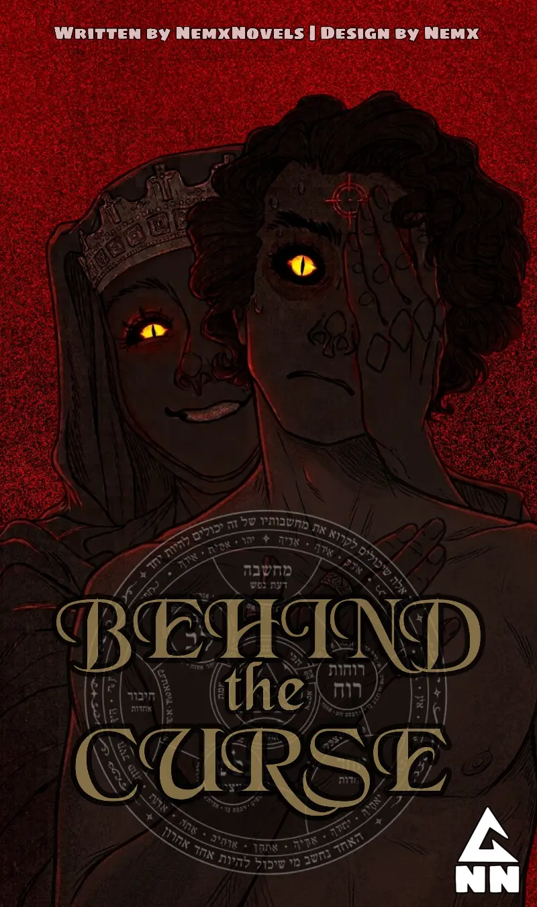

"I just wish I could stay here forever."
"Here?"
"The university."
She shrugged.
"Being a student is easier. You know what you're supposed to do. Go to class, study, complain about assignments, pretend you're going to start studying early next time..."
Damon smiled slightly.
"Sounds terrible."
"It is."
Kim smiled.
"But at least I know what comes next."
She looked toward the hallway.
"After graduation, I don't know anything."
Before Damon could respond, a voice came from behind Kim.
"Ah."
Kim turned.
Lucas was standing in the doorway of his room.
He looked at Damon.
Then at Kim.
"And it's strange to see you up so early in the morning."
Kim crossed her arms.
"It's strange to see you awake."
Lucas shrugged.
"It happens to be a Monday."
Kim stared at him.
"That doesn't explain anything."
"It explains everything."
Lucas walked into the sitting room.
Damon looked down at the book in his hands.
Lucas noticed the title.
"'How to Move the Mountain'?"
He looked at Damon.
"You planning on becoming a motivational speaker?"
Damon looked at the book.
"I'm still trying to figure out how the mountain moves."
Lucas nodded.
"Let me know when you figure it out."
Kim rolled her eyes.
"You two are weird."
Lucas smiled.
"Good morning to you too."
Lucas came out of his room a few minutes later.
He walked straight toward the refrigerator, opened it, and took out a carton of milk.
Damon and Kim were both looking at him.
Lucas noticed.
He stopped.
Looked at them.
They stared back.
Lucas raised an eyebrow.
"Have the two of you never seen a Lady Gaga like me before?"
He opened the carton and took a drink.
Kim looked at his hair.
"No."
She paused.
"But you need to get your hair done."
Lucas lowered the milk.
"What?"
"The back looks missing."
Lucas reached behind his head.
"It's called style."
"It's called needing a haircut."
Kim walked toward the door.
Before leaving, she looked at Damon.
"I'm Kim. His sister."
She pointed toward Lucas.
"And you?"
Damon closed his book.
"I'm Damon. I'm a student."
Kim stared at him oddly.
Damon stared back.
There was a brief silence.
"...Okay."
She opened the door.
"Bye, you guys."
Then she left.
The door closed.
Lucas looked at Damon.
Damon looked at Lucas.
Lucas took another drink of milk.
"Don't touch my sister."
Damon blinked.
"...What?"
"Don't touch her."
Lucas raised a finger.
"Don't even smell her."
Damon stared.
"And don't hold hands."
"Okay..."
"You will be cosmically destroyed by time and space for touching a dimensionally important person."
Damon slowly looked down at his book.
"Right."
Lucas continued drinking his milk as if he'd just given Damon completely normal advice.
After a moment, Damon spoke.
"Do you happen to know where the finishing classes are?"
Lucas looked at him.
"I might later."
Then he walked back into his room.
Damon watched him disappear.
"...What does that mean?"
There was no answer.
Damon sighed and returned to his book.
He turned another page.
Then his eyes caught a passage.
"Finally..."
He read quietly.
"Be strong in Elohim and in his mighty power. Those who hope in him will renew their strength."
Damon paused.
He looked at the words for a moment.
Then Lucas came back out of his room.
"The bulb needs electricity in order to shine."
Damon looked up.
Lucas walked toward the door.
"It gets its strength from electricity."
He opened the door.

.png)
.png)
.png)
.png)